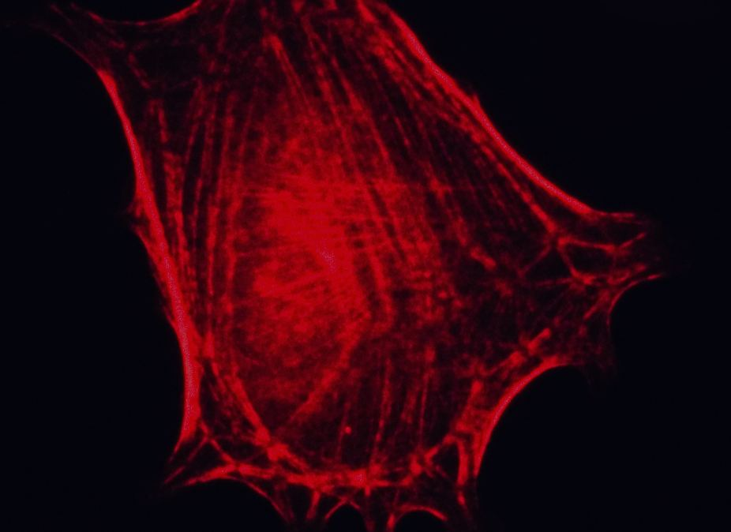

Microwaving Cancer
Specific photothermal ablation of cancer cells
Yi-Wen Chen
Fall 2007

Every known treatment for cancer comes with a potpourri of undesirable
side effects ranging from hair loss to internal bleeding. Most of
these side effects are due to the non- specific nature of cancer
therapy, which often destroys cells whether or not they are cancerous.
But recently, Hongjie Dai, PhD, head of Stanford University’s
nanotechnology research team, may have overcome this difficulty by
developing targeted carbon nanotubules that will microwave cancer cells
from the inside out.
How do these nanotubules target cancer cells? Many
types of cancer cells, such as those in renal and ovarian tumors,
over-express surface receptors for folate, or vitamin B9. Dai’s team
thus coats these nanotubules, which they refer to as quantum dots, with
folate to increase their specificity for cancer cells. Once they bind
to the cancer cells, the quantum dots enter the cells via endocytosis,
a process normally used for the uptake of nutrients. The tubules can
then be activated to produce thermal energy by a beam of near-infrared
light, which will kill the cell and, more importantly, leave other
tissues unaffected.
“The idea is sort of like how your microwave works,”
said Dean Felsher, MD, PhD, professor of medicine at Stanford
University. The amount of energy deposited can be modulated by changing
the number of quantum dots in the cells and the intensity of the
incident light beam. Once the procedure becomes fine-tuned doctors can
prevent the temperature from reaching levels that will be dangerous to
the surrounding tissue. However, these results, which appeared in the
August 2005 issue of the Proceedings of the National Academy of
Sciences, refer to cancer cells that were cultured in Petri dishes, and
thus the in vivo relevance of this method is still in question.
While Dai’s methods have so far only been tested in
vitro, previous work from the laboratories of Jennifer West, PhD, the
principal scientific officer at Nanospectra Biosciences, Inc., in
Houston, Texas, has confirmed the potential of photo- thermal therapy
in vivo. West’s team opted to use silica particles covered with a thin
lamina of gold instead of the carbon quantum dots favored by Dai. Also,
instead of coating them with folate, she sheathed them in polyethylene
glycol to prevent immune reactions. These particles were injected
directly into tumors in mice and then activated in a similar fashion.
As reported in the June 2005 issue of Cancer Letters, tumors in the
silica-injected mice vanished within 10 days and the mice remained
tumor- free after 90 days, while tumor growth continued unabated in
control mice or those treated with a sham surgery in which only saline
was injected. Unfortunately, it is not clear that these silica
particles were precisely targeted towards cancer cells, and thus they
may lack the specificity of Dai’s quantum dots. However, the particles
can be coated with substances other than polyethylene glycol, and
further modifications to the protocol are underway. Currently,
Nanospectra is waiting for the Food and Drug Administration’s
permission to move towards limited clinical trials.
Obviously, more research needs to be done in order
to adapt these protocols for human use; immune rejection and precise
targeting are likely to be the most difficult barriers to overcome.
However, the promising results in cell culture and animal models hint
that it is only a matter of time before specific and relatively
non-invasive cancer therapy becomes a reality.
About the Author
Yi-Wen Chen is a third year Molecular and Cell Biology major who intends to pursue a MD degree to serve the underserved.